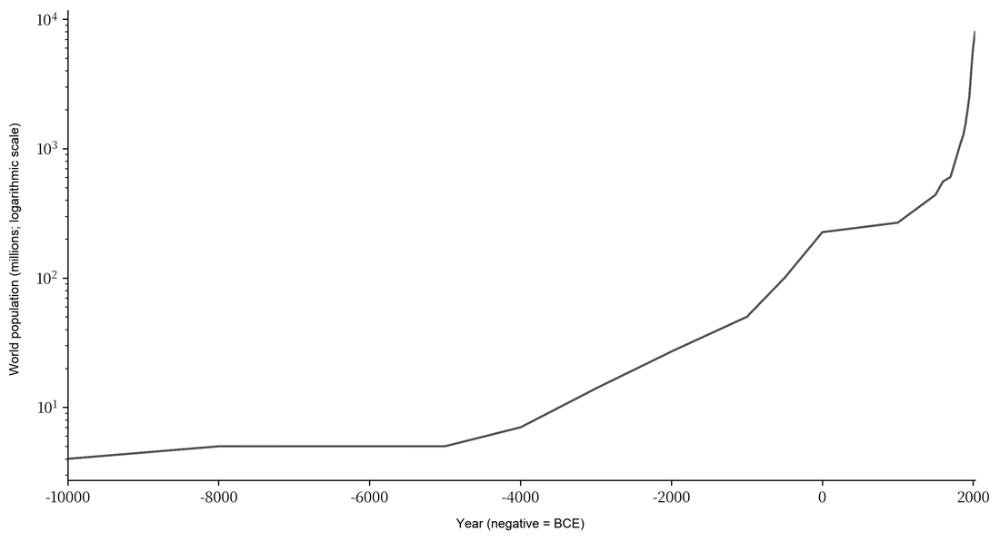

How did humans change how they obtain food and protect themselves from the cold — and how did subsistence innovation expand resources and sustain population growth?
Survival is the most basic need of every animal. Through continual innovation, humans have changed how they obtain food and protect themselves from the cold. Over tens of thousands of years, these efforts have also transformed the face of the Earth.
Homo sapiens carried tools, fire-related skills, and other technologies out of Africa. People multiplied as they migrated, gradually spreading across the world. New environments brought new challenges and gave rise to different ways of making a living.
As settlement and agriculture developed, people cleared land and turned large areas into fields and pastures. Villages, roads, and irrigation works spread, reshaping the landscape.
To obtain more food, people continually selected and bred crops. Plants domesticated in different regions traveled with migrants and traders. Maize, rice, and wheat gradually became staples in many parts of the world.
Crops flourish when water and soil conditions are suitable. People built dams, reservoirs, and canals to bring water to their fields, accumulating knowledge of irrigation and water management through generations of practice.
From raw food to cooked meals, and from simple roasting to elaborate cuisines, the preparation of food is full of invention. Pottery, cooking vessels, stoves, processing tools, and seasonings made food easier to store, prepare, and enjoy.
Food satisfies hunger; clothing protects against the cold. People developed textile technologies using natural fibers such as hemp, cotton, wool, and silk, and later invented synthetic fibers. Clothes and bedding meet everyday needs, while their colors, patterns, and styles have become distinctive expressions of culture.
Subsistence technologies expanded the resources available to humans and increased the number of people that land could support. During the tens of thousands of years after Homo sapiens left Africa, migration opened access to new regions and their wild plants and animals. More than ten thousand years ago, agriculture began emerging in different places. Cultivation, animal husbandry, and storage gradually increased food supplies. Subsequent improvements in irrigation, farming tools, and cultivation methods supported denser populations and more complex societies.
Over the past few centuries, oceanic exploration and exchange spread American crops such as maize and potatoes around the world, broadening food supplies in many regions. Agricultural modernization increased yields further, while medicine and public health reduced mortality and extended life expectancy. Together, these changes helped drive rapid population growth. The United Nations estimated the world population at about 8.2 billion in 2024.
Figure II-1. World population over more than ten thousand years. The horizontal axis shows the year; the vertical axis shows population on a logarithmic scale.

Source: Angus Maddison, historical statistics of the world economy, 2010; BCE values are interpolated from estimates by McEvedy and Jones.
About two-fifths of the major achievements classified as Subsistence in this book’s database appeared in or before 5000 BCE, chiefly during the Agricultural Revolution. Farming, irrigation, and food-processing technologies continued to accumulate over the following millennia. By the beginning of the Common Era, about 74% of this category’s entries had appeared. These early firsts established the basic repertoire of subsistence technologies. Mechanization, breeding, and changes in production over recent centuries greatly increased their efficiency and scale.
Figure II-2. Cumulative major scientific and technological achievements in Subsistence over more than ten thousand years.
Source: Database of Major Scientific and Technological Achievements.
Early subsistence technologies had pronounced regional characteristics. Available wild species, climate, water, and soil shaped the content and pace of agricultural development. The Fertile Crescent was among the earliest centers of agriculture; South Asia, China, and other regions developed their own agricultural traditions, which later spread through networks of exchange. The book’s statistical region of Europe includes Asia Minor. Nearly half the European entries shown in Figure II-3 for the period through the third millennium BCE originated in Asia Minor, in what is now Turkey. The Agricultural Revolution unfolded over a long period, and crops, diets, and production practices gradually became part of local cultures.
Rice cultivation, pottery, and other technologies sustained human populations and laid foundations for later innovation. Silk illustrates how uses can expand: Silk textiles serve clothing, aesthetic, and social functions, and their value also encouraged long-distance trade. Because of their principal social uses, this book classifies silk textiles under Communication and Entertainment. Chapter 4, “Conspiracies and Legends on the Silk Road,” explores that story. Over the past two centuries, agricultural and textile modernization originating in Europe and North America has spread through diffusion and local improvement into production and everyday life around the world.
Figure II-3. Cumulative major achievements in Subsistence by region at selected historical dates.

Source: Database of Major Scientific and Technological Achievements; regional conventions are explained in the appendix.
From migrating across the globe and clearing land to cooking food and weaving cloth, humans have pursued a long history of subsistence innovation. These achievements sustained population growth, fostered trade and specialization, and gradually carried eating and dressing beyond the necessities of staying alive into the distinctive food and clothing cultures of different societies.
This article is the introduction to Part II, Necessities: Subsistence, of The Power of Desire: A Brief History of Scientific & Technological Innovation (second edition) — History of Subsistence Innovation: Introduction. Previous: Structure of Major Innovation. Next: Chapter 1, Homo sapiens in a Changing African Environment (to follow). See the full serialization index.